3
grands groupes médiasmajor media groups
Canal+ · beIN SPORTS · RMC Sport
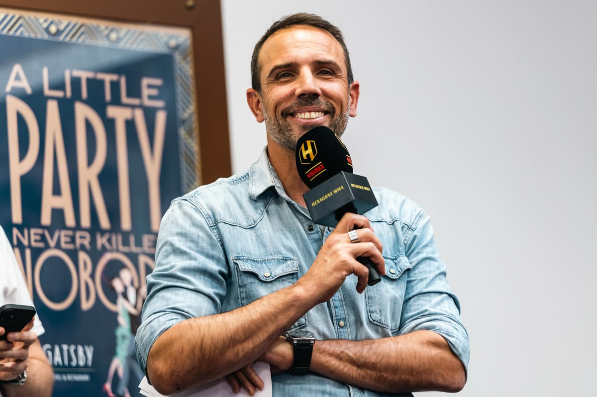
Deux métiers, une maîtrise de l'instant. Donner du rythme, transmettre des émotions et créer un lien étroit avec le public, tout en sachant s'adapter à chaque situation.Two professions, one mastery of the moment. Bringing rhythm, conveying emotion and building a close bond with the audience, while adapting to every situation.
Présentation · Commentaire · Journalisme · InterviewsPresenting · Commentary · Journalism · Interviews
Découvrir l'univers TVExplore the TV world Univers 02World 02Événements sportifs · Galas · Scène · AnimationSports events · Galas · Stage · Hosting
Découvrir l'univers SpeakerExplore the Speaker worldChoisissez un univers · ou faites défilerChoose a world · or scroll
Journaliste-présentateur international, je cumule plus de 20 ans d'expérience dans la couverture d'événements sportifs. Formé en Californie (San Diego, Los Angeles, Fox Sports World) et en Espagne (Eurosport Madrid), je suis parfaitement bilingue français / anglais.An international journalist-presenter, I have 20+ years of experience covering sporting events. Trained in California (San Diego, Los Angeles, Fox Sports World) and Spain (Eurosport Madrid), I'm fully bilingual English / French.
Fort d'un solide parcours en sports de combat, en football, en rugby, en boxe et sur les grands événements internationaux, je suis aussi à l'aise en plateau que sur scène. Titulaire d'un Master en PNL (programmation neuro-linguistique), je place l'intelligence émotionnelle au cœur de mon approche.With a strong track record in combat sports, football, rugby, boxing and hosting global events, I'm as comfortable in the studio as on stage. Holding a Master's in NLP (Neuro-Linguistic Programming), I put emotional intelligence at the heart of my craft.
J'ai collaboré avec les plus grands médias sportifs, Fox Sports World, Eurosport, Canal+, W9, beIN Sports et RMC Sport, sur le football, le rugby, la boxe, les sports US et le MMA. Aujourd'hui, je commente les combats de l'UFC et la Premier League sur RMC Sport et je suis le speaker officiel de la ligue Hexagone MMA.I have worked with the biggest sports media, Fox Sports World, Eurosport, Canal+, W9, beIN Sports and RMC Sport, across football, rugby, boxing, US sports and MMA. Today I commentate UFC fights and the Premier League on RMC Sport and I'm the official speaker for the Hexagone MMA league.
Au-delà de l'antenne et de la scène, j'accompagne dirigeants et porte-parole en media training et prise de parole en public.Beyond broadcasting and the stage, I coach executives and spokespeople in media training and public speaking.
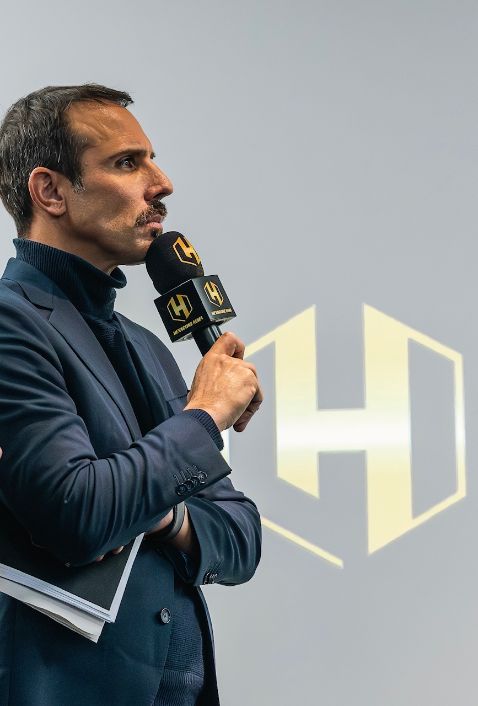
Canal+ · beIN SPORTS · RMC Sport
Paris 2024, natation, Paris La Défense ArenaParis 2024, swimming, Paris La Défense Arena
Finale Champions Cup 2022, Orange Vélodrome, Marseille · La Rochelle – Leicester2022 Champions Cup Final, Orange Vélodrome, Marseille · La Rochelle – Leicester
Speaker MMA, LDLC Arena, LyonMMA speaker, LDLC Arena, Lyon
Journaliste · Présentateur · Commentateur · Interviewer · Speaker & Maître de cérémonieJournalist · Presenter · Commentator · Interviewer · Speaker & MC
Les chaînes, médias et organisations qui me font confiance, à l'antenne comme sur scène.The channels, media and organisations that trust me, on air and on stage.
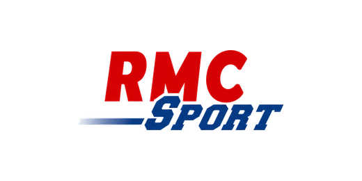
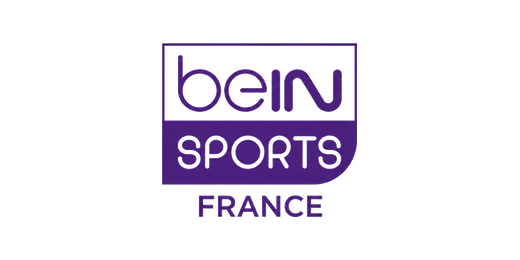
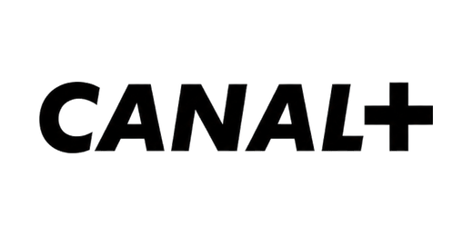
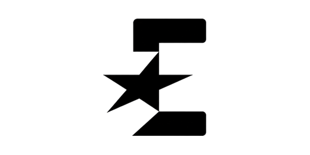
Un projet, une émission, un événement ? Échangeons sur vos besoins, je vous réponds vite, avec une proposition adaptée.A project, a show, an event? Let's talk about your needs, I reply fast, with a proposal tailored to you.
Journaliste-présentateur international, fort de plus de 20 ans d'expérience, j'accompagne médias, producteurs et organisateurs dans la présentation et la mise en valeur de leurs événements. Sports de combat, football, grands rendez-vous internationaux : je lis l'instant, donne du rythme et je transmets l'émotion, en français comme en anglais.An international journalist and TV presenter with 20+ years of experience, I work with broadcasters, producers and event organisers to present and bring their events to life. From combat sports and football to major international events, I bring editorial expertise, live experience and a strong ability to convey emotion.
Découvrir mes prestationsDiscover my services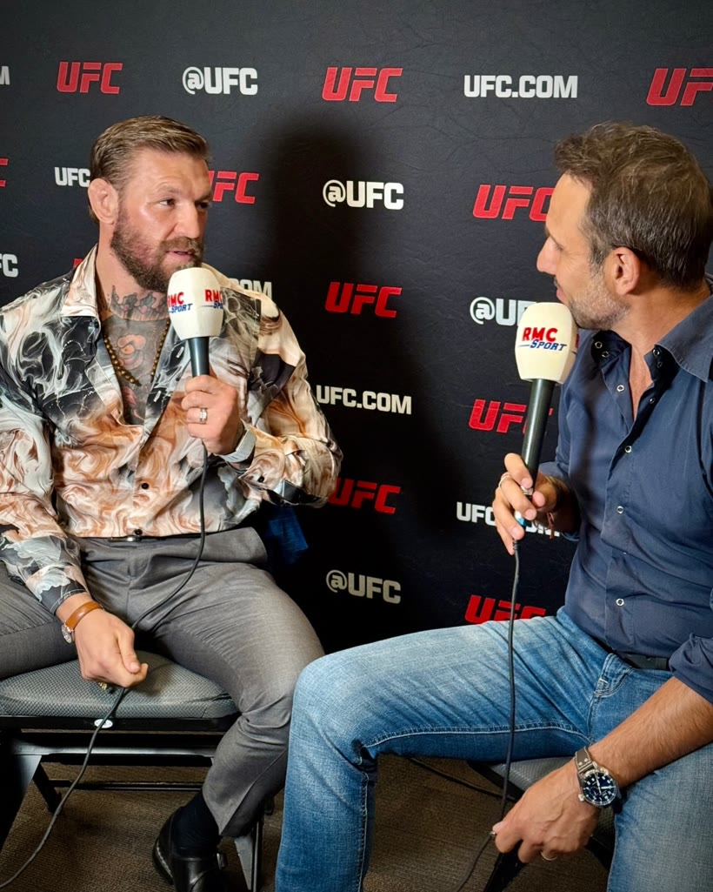
Une expertise éditoriale, le sens du storytelling et une vraie maîtrise du direct.Editorial expertise, storytelling and a strong command of live broadcasting.
Présentation de programmes, journaux et magazines sportifs, en plateau comme en direct.Presenting programmes, news and sports magazines, in studio and live.
Commentaire en direct d'événements et de combats, avec rythme, analyse et émotion.Live commentary of events and fights, with pace, analysis and emotion.
La puissance du storytelling.The power of storytelling.
Entretiens avec athlètes, entraîneurs et personnalités, en plateau comme en immersion.Conversations with athletes, coaches and personalities, in studio and in the field.
Présentateur TV, UFC, PFL Europe, Premier LeagueTV presenter, UFC, PFL Europe, Premier League
Speaker des événements MMA, dans les arènes en EuropeSpeaker for MMA events, in arenas across Europe
Animation d'événements, annonceur boxe & MMA, prise de paroleEvent hosting, boxing & MMA announcer, public speaking
Enseignant, prise de parole, personal branding, storytellingLecturer, public speaking, personal branding, storytelling
Plateaux & magazines sportifs (émission « Salon VIP »)Studio shows & sports magazines (“Salon VIP”)
Commentateur des Super Bowls XLIV · XLV · XLVI, sports USCommentator of Super Bowls XLIV · XLV · XLVI, US sports
Football européen, sports US, golf, cyclismeEuropean football, US sports, golf, cycling
Débuts dans le journalisme sportif internationalEarly years in international sports journalism
Formation de journaliste-présentateur, San Diego · Los AngelesTrained as a journalist-presenter, San Diego · Los Angeles
Extraits de commentaires, d'interviews et de passages en plateau.Commentary, interviews, studio segments and live hosting.
Des soirées UFC aux grands matchs européens : commentaire, interviews et présentation en direct.From UFC nights to major European games: commentary, interviews and live presenting.
DémontreShows commentaire · interview · présentationcommentary · interviews · presentingDeux soirées à l'Accor Arena : présentation en direct, plateau et interviews de judokas, devant une salle comble.Two nights at the Accor Arena: live hosting, desk and judoka interviews, before a packed crowd.
DémontreShows présentation · direct · interviewspresenting · live · interviewsPlateaux, commentaires, interviews : un condensé de ma voix et de ma maîtrise du direct.Studio, commentary, interviews: a condensed look at my voice and command of live.
DémontreShows présentation · commentaire · interviewpresenting · commentary · interviews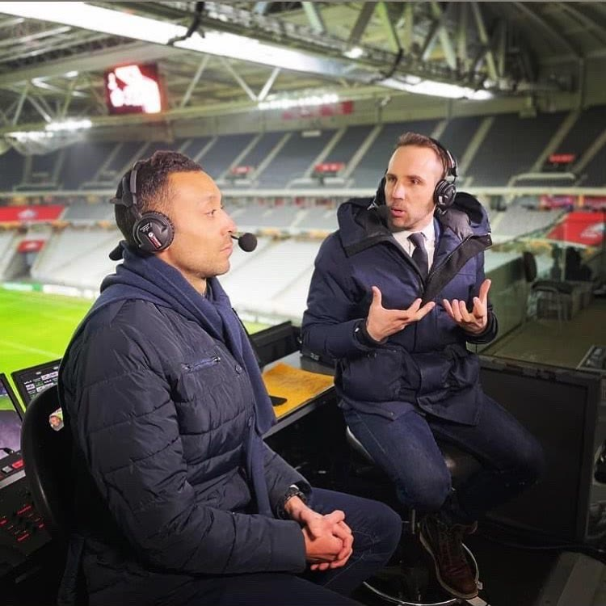
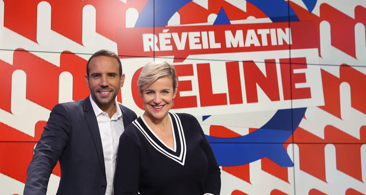
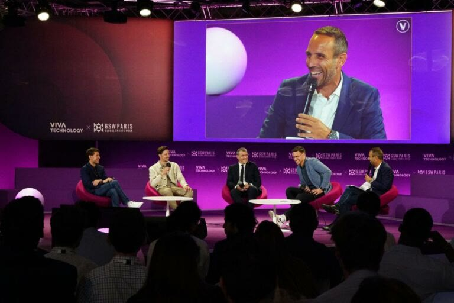
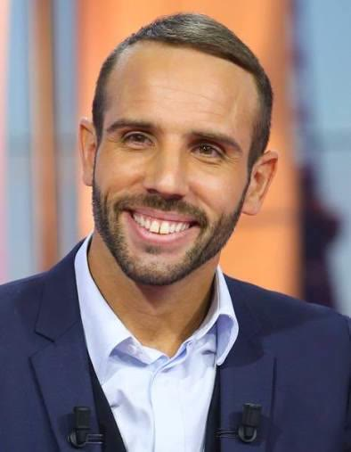
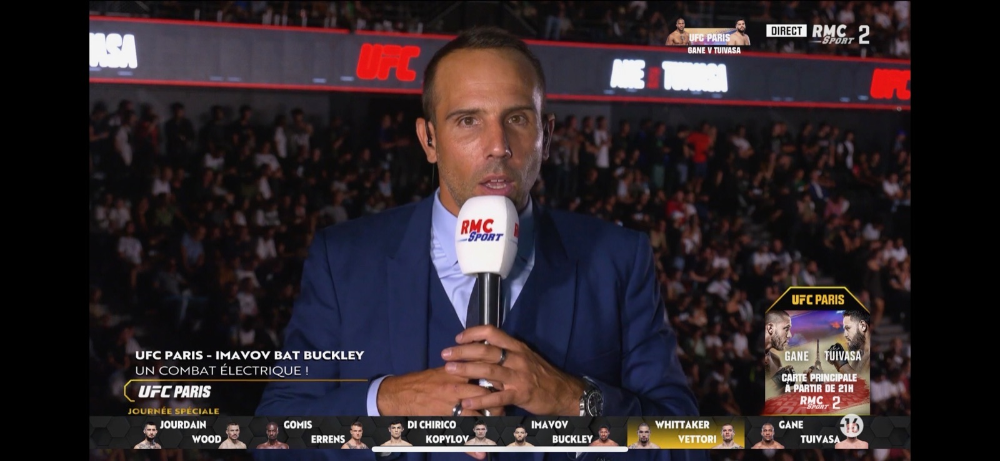
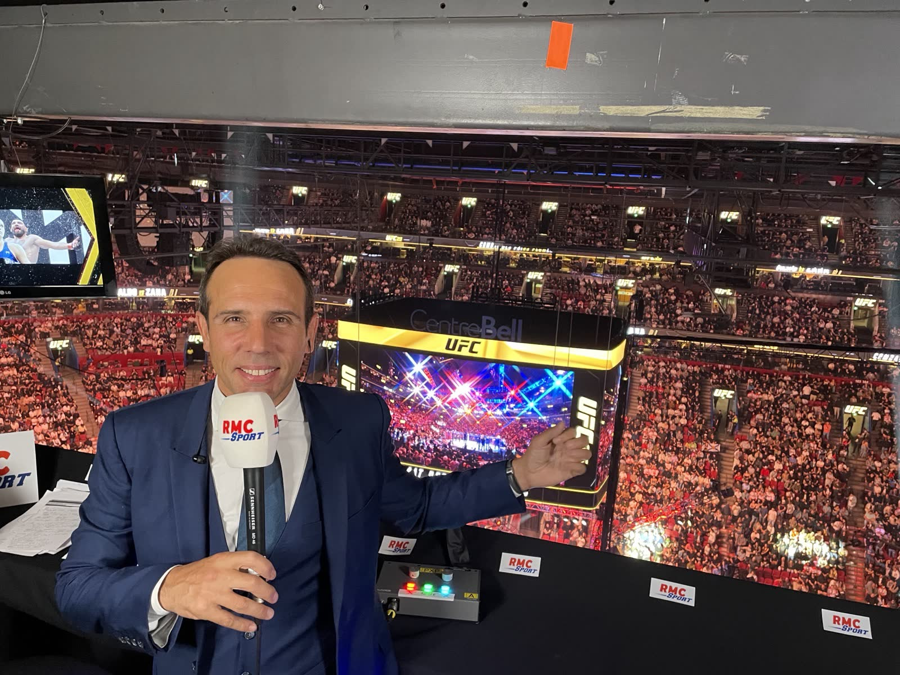
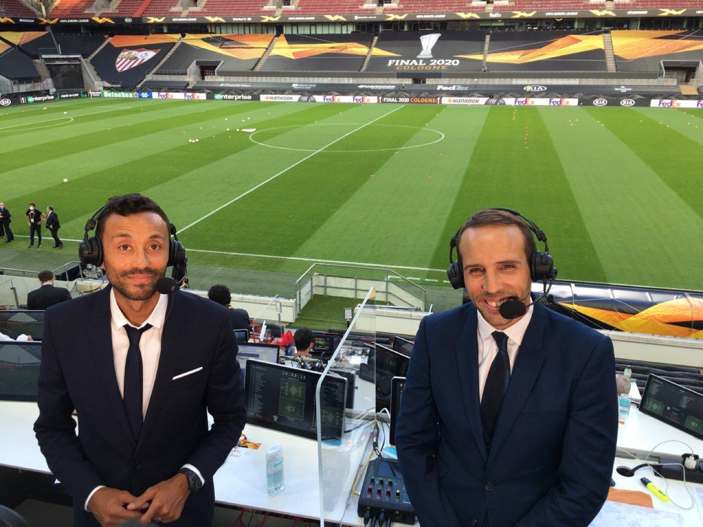
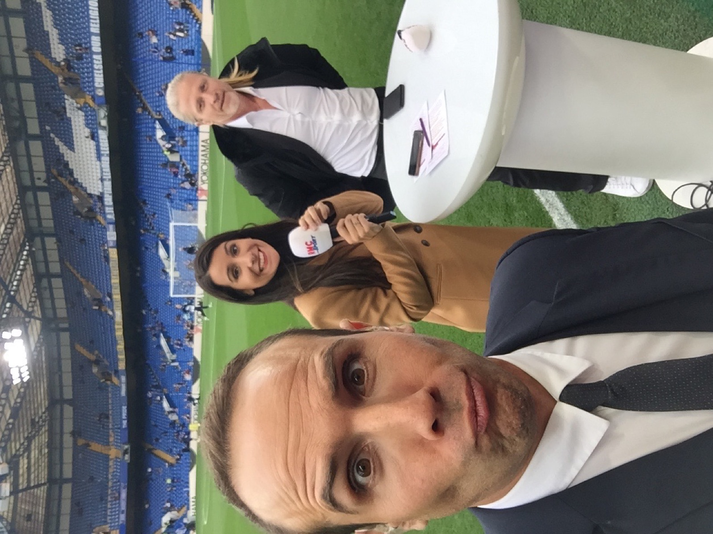
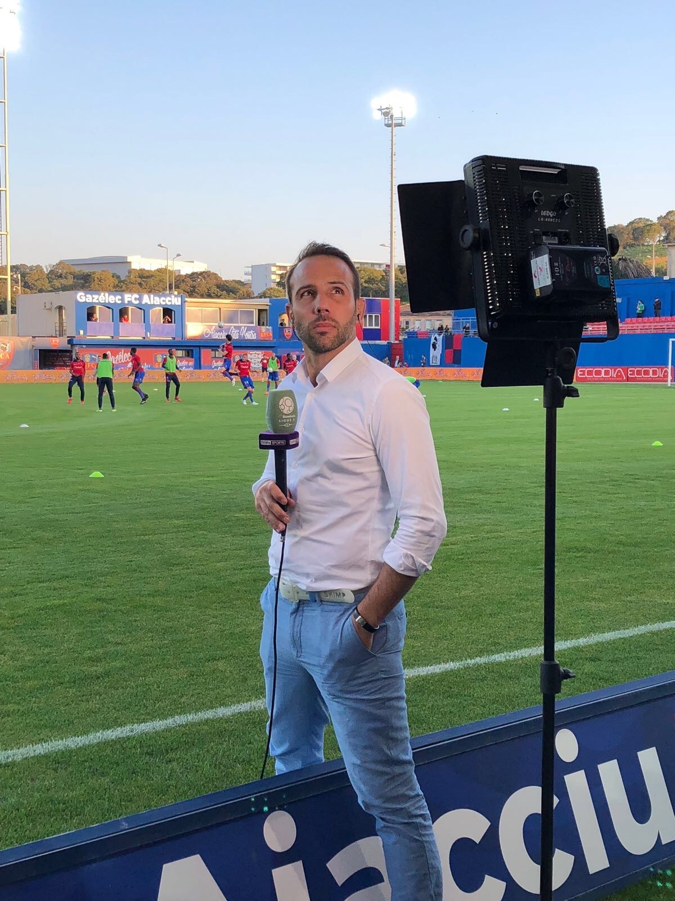
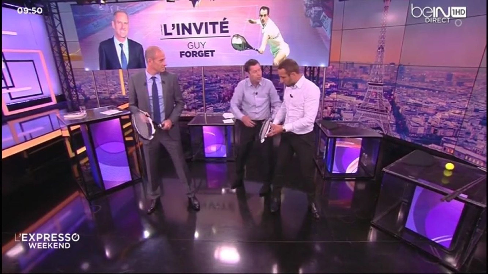
Tenir l'antenne, garder le fil et le calme, quoi qu'il arrive.Holding the air, keeping the thread and the calm, whatever happens.
Lire un combat, un match, une situation et l'expliquer clairement.Reading a fight, a match, a situation and explaining it clearly.
Recherche, angles et documentation en amont de chaque intervention.Research, angles and documentation ahead of every booking.
Transformer les faits en récit et faire monter l'émotion.Turning facts into a story and building the emotion.
Rebondir en temps réel sur l'imprévu et l'actualité.Reacting in real time to the unexpected and the news.
Rendre le sport de combat lisible pour tous les publics.Making combat sports readable for every audience.
Connaissance fine du MMA, de la boxe et de leur écosystème.In-depth knowledge of MMA, boxing and their ecosystem.
Présence, regard et diction au service du message.Presence, gaze and diction serving the message.
Mettre l'invité en confiance et aller chercher la bonne réponse.Putting the guest at ease and drawing out the right answer.
Épouser le ton et la ligne de chaque média.Matching the tone and line of each outlet.
Parlons-en. Réponse rapide et proposition adaptée à votre antenne.Let's talk. Fast reply and a proposal tailored to your channel.
Me contacterContact meSpeaker et maître de cérémonie, j'accompagne les organisateurs pour créer une expérience forte, fluide et mémorable. De l'ouverture aux temps forts, je crée le lien entre la scène, les intervenants et le public.As a speaker and master of ceremonies, I bring structure, energy and presence to the stage. From the opening moments to the event's highlights, I create a natural connection between speakers and the audience.
Découvrir mes prestations événementiellesDiscover my event services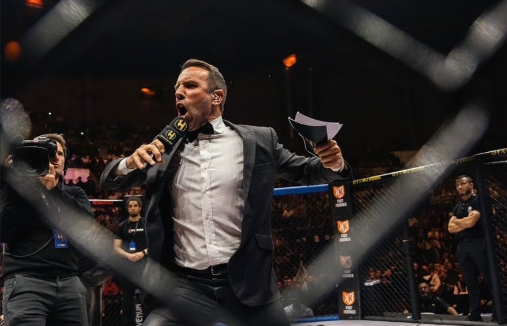
Présentation, animation, transitions et temps forts : j'assure le fil rouge de l'événement et crée le lien entre les intervenants et le public.I bring pace, presence and energy to the stage, guiding your event from its opening moments to its highlights.
Annonce, énergie et ferveur lors des grands rendez-vous sportifs.Announcing, energy and fervour at major sporting events.
Fil rouge de l'événement, transitions, temps forts et coordination des interventions.The event's through-line: transitions, highlights and coordinating every intervention.
Conventions et conférences, accompagnement des intervenants et coaching de prise de parole.Conventions and conferences, supporting speakers and public-speaking coaching.
Animation de galas, remises de prix, cérémonies et événements d'entreprise.Hosting galas, award ceremonies and corporate events.
Occuper la scène et capter l'attention dès l'entrée.Owning the stage and grabbing attention from the first moment.
Ni temps mort, ni précipitation, la juste cadence.No dead air, no rushing, just the right cadence.
Du gala feutré à la cage électrique, toujours le bon registre.From the hushed gala to the electric cage, always the right register.
Créer un lien immédiat avec la salle et le public.Building an instant connection with the room and the crowd.
De la cage MMA à la scène : annonces, animation et modération devant le public.From the MMA cage to the stage: announcing, hosting and moderating in front of a live audience.
J'annonce les combats phares, micro en main au centre de l'octogone, salle debout.I announce the headline fights, mic in hand at the centre of the octagon, crowd on its feet.
DémontreShows annonce · présence · gestion du publicannouncing · presence · crowd controlL'énergie d'un gala parisien : entrées, combats et temps forts portés à la voix.Walkouts, fights and highlights, brought to life through the voice of live sport.
DémontreShows événement · ambiance · scèneevent · atmosphere · stageAnnonces, interviews dans la cage et montée en tension d'une soirée à Lyon.Announcements, in-cage interviews and the rising tension of a night in Lyon.
DémontreShows annonce · interview · ambianceannouncing · interviews · atmosphereAnnonces dans la cage et interviews de combattants (UFC, Hexagone) menées entièrement en anglais : présence, énergie et gestion du public.Cage announcements and fighter interviews across UFC and Hexagone MMA: presence, energy and crowd control.
DémontreShows anglais · présence scénique · interviewsEnglish · stage presence · interviewsSur scène, j'anime l'échange avec Émile Ntamack et Jacques Rivoal (France 2023).Moderating a conversation with Émile Ntamack, former French international, and Jacques Rivoal, former President of France 2023.
DémontreShows modération · scène · interviewsmoderation · stage · interviews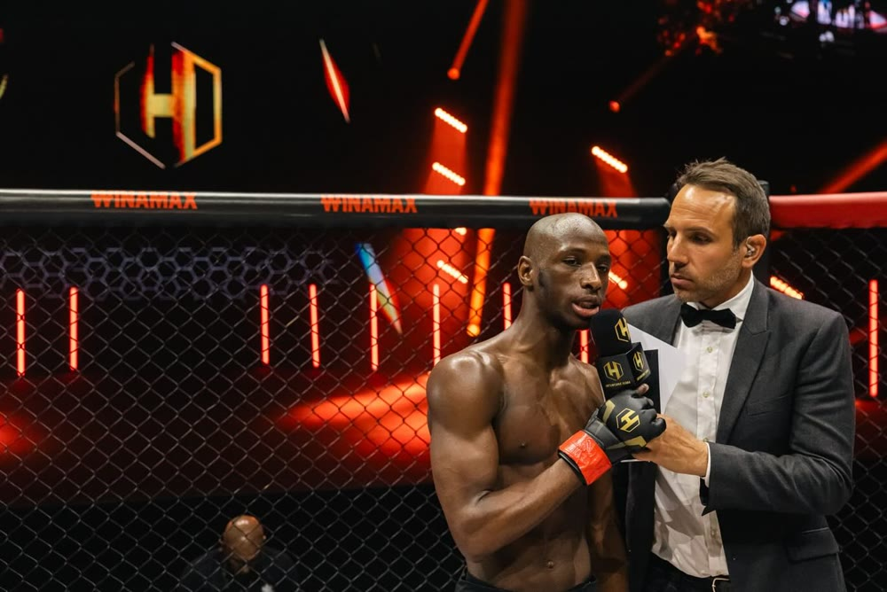
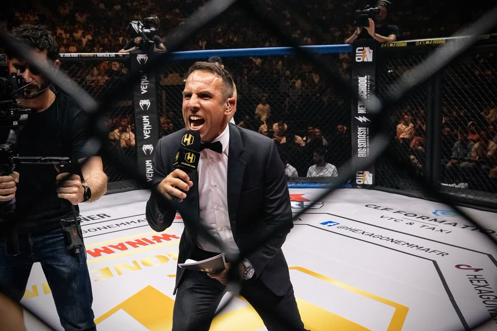
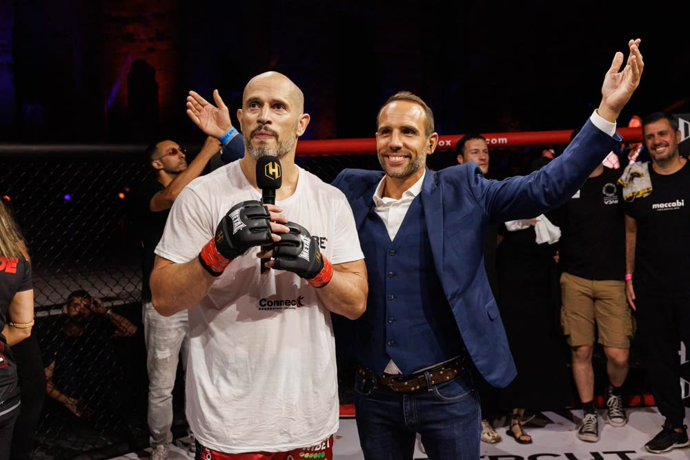
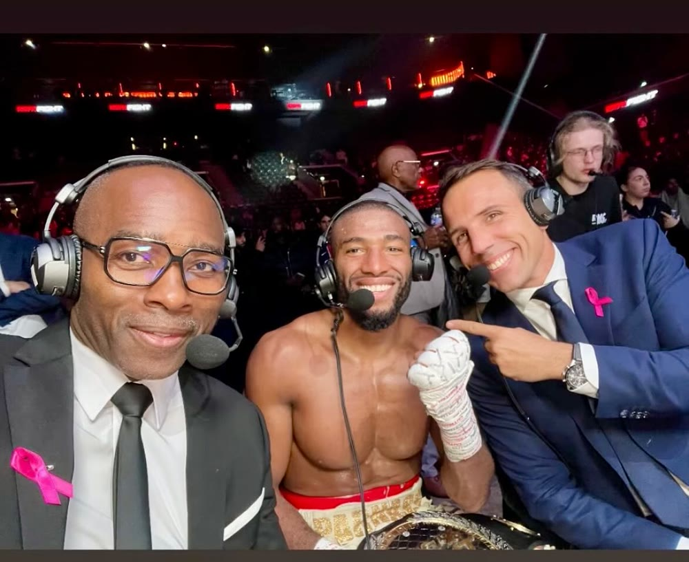
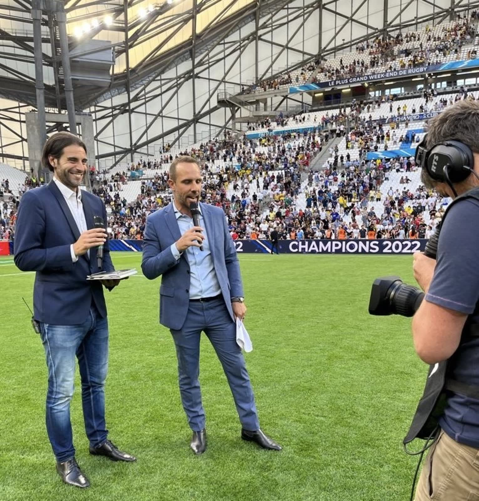
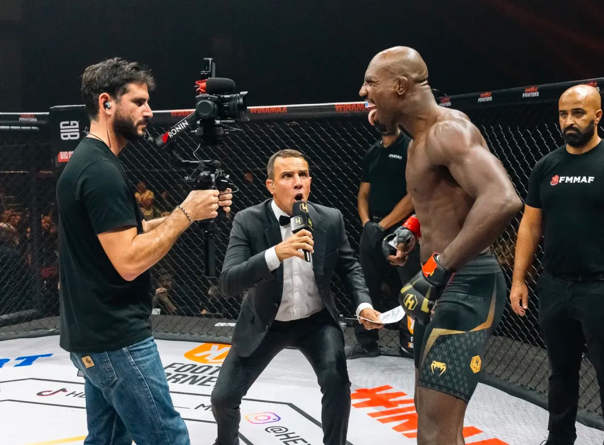
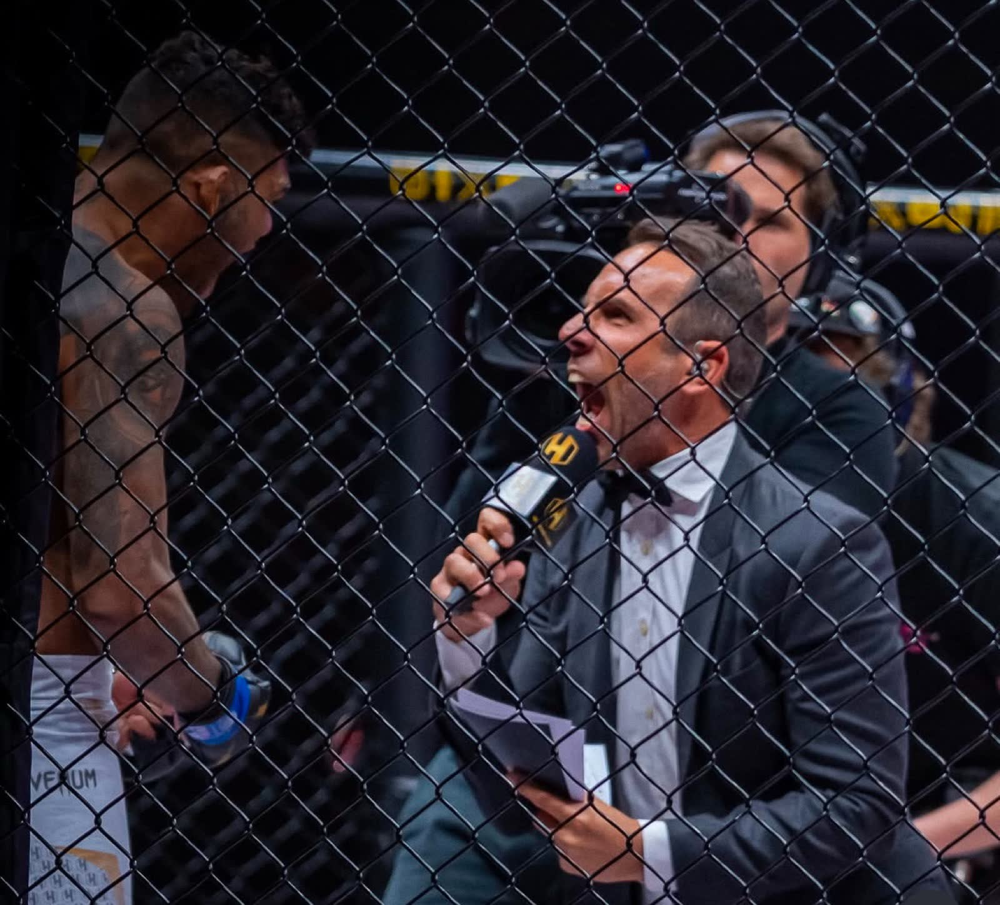
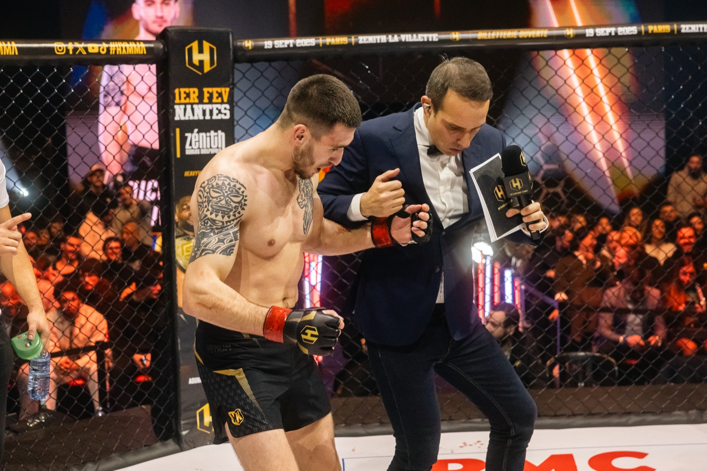
Premier contact pour cerner vos attentes et le cadre de l'événement.First contact to pin down your expectations and the event's scope.
Public, enjeux, temps forts, ton souhaité, on cadre l'essentiel.Audience, stakes, highlights, desired tone, we frame the essentials.
Recherche, documentation et écriture des prises de parole.Research, documentation and scripting of the talks.
Un déroulé précis, minute par minute, calé sur votre programme.A precise running order, minute by minute, aligned with your programme.
Alignement avec les équipes techniques, son et lumière.Alignment with the technical, sound and lighting teams.
Derniers ajustements et calage des enchaînements.Final tweaks and locking the sequence.
Animation complète de l'événement, du lancement au final.Full hosting of the event, from kickoff to finale.
Retour à froid pour capitaliser sur les prochaines éditions.A cool-headed review to build on for future editions.
Confiez-moi le micro : préparation, conducteur et présence le jour J.Hand me the mic: preparation, run-of-show and presence on the day.
Proposer un événementPitch an event